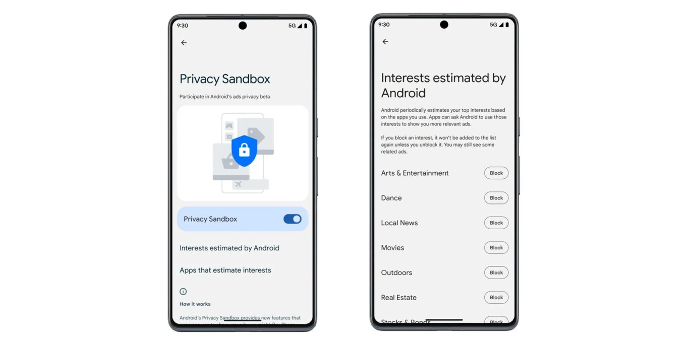
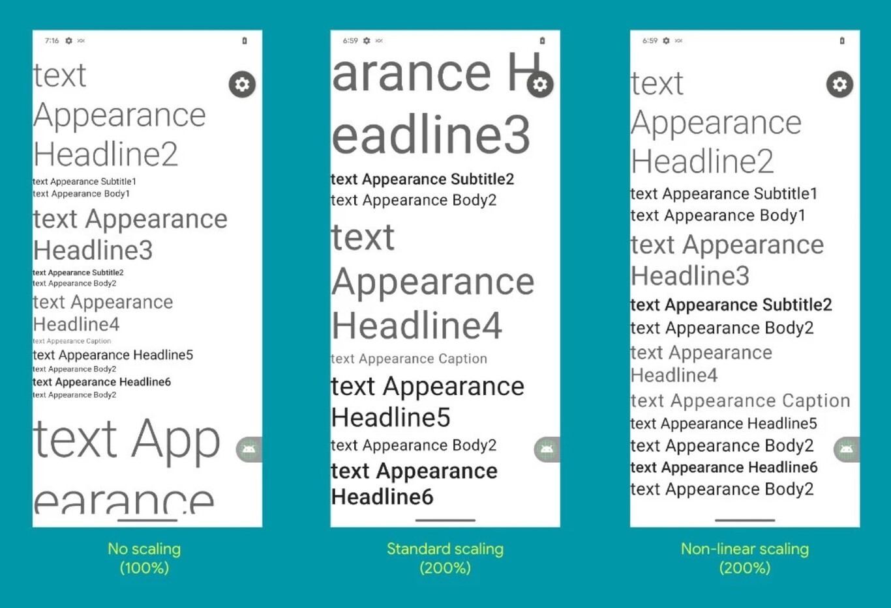
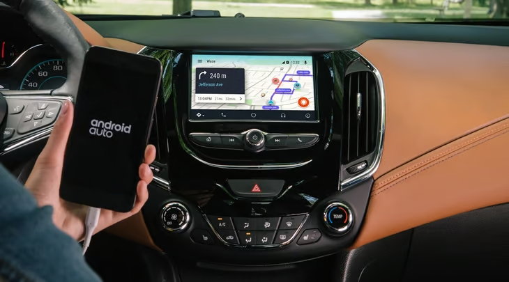

.png)
Todas las novedades sobre Android, últimas noticias sobre el sistema operativo de Google, todos los dispositivos compatibles y sus fechas de lanzamiento, nuevas versiones, ROMs y actualizaciones. En Pataka te informamos cuándo sale la nueva actualización de Android, qué novedades incluye, qué móviles son compatibles y los trucos secretos de cada nueva versión. Consulta nuestras guías y tutoriales para saber cómo funciona Android, nuevas aplicaciones para tu teléfono o tablet y consejos sobre las mejoras de configuración para aprovechar al máximo la memoria, batería y rendimiento de tu smartphone o tableta.
La industria publicitaria móvil ha sido fuertemente criticada en los últimos años, lo que ha llevado a ciertos actores a modificar sus prácticas que en determinados casos no eran demasiado transparentes y recurrían a la recopilación y entrecruzamiento de datos para perfilar a su público.

En el caso del gigante de las búsquedas, este está probando nuevas API que ofrecen a los usuarios la
posibilidad de tener un mayor control de los anuncios que pueden llegar a recibir. Además, al mismo
tiempo, impulsan un comportamiento menos individualista en el caso de la segmentación.
Con Privacy Sanbox, Android contará con un apartado que permitirá gestionar los temas de interés
publicitarios, por ejemplo, “moda”, “coches” o “tecnología”. Se podrán escoger algunos, para recibir
anuncio al respecto, o bloquearlos en caso de que no se ajusten a los intereses deseados.
Por sorpresa aunque sospechando que en febrero llegaría. Android 14 acaba de aterrizar en su primera versión para desarrolladores. El sucesor de Android 13 ya se puede instalar en los Google Pixel aún estando en fase preliminar, y deja ver todas las novedades que Google está preparando para su nuevo sistema operativo. Vamos a contarte todas las características de Android 14 en su versión inicial, así como el proceso de instalarla en tu teléfono.

Android 14 viene repleta de novedades, bajo el nombre Upside Down Cake. En primer lugar, encontramos
mejoras en accesibilidad. Las fuentes son aún más grandes para que cualquier usuario con ciertos
problemas de visión pueda ver la pantalla correctamente. En concreto, podemos escalar los tamaños de
fuente hasta en un 200% frente al 130% anterior.
El sistema, a partir de esta versión, nos enviará una notificación cuando vayamos a instalar una
aplicación que se haya desarrollado con un nivel de API antiguo. El mensaje es el que ya conocíamos de
que "esta app se ha desarrollado para una versión antigua de Android", pero ahora avisarán cuando el
nivel de API de 27 inferior, frente al antiguo límite de API 22.
Ha habido mejoras también en lo referente a los perfiles de usuario. Si tenemos habilitado un segundo perfil en el teléfono, por ejemplo, para que lo use nuestro hijo, podremos obtener un historial con las llamadas telefónicas y envío de mensajes de texto.
Vamos a explicarte qué es y cómo activar el seguimiento de envíos de Gmail, una nueva función que acaba de llegar al cliente de correo electrónico de Google. Se trata de una opción disponible en la aplicación de Gmail para Android, y que ha llegado a varios países entre los que se encuentra España.
Vamos a empezar el artículo explicándote de qué trata exactamente esta opción de Gmail y lo que puedes conseguir con ella. Y luego, pasaremos a decirte paso a paso cómo puedes activarla en tu móvil Android.
La opción de seguimiento de envíos intenta que Gmail te ayude a rastrear tus pedidos directamente desde
la bandeja de entrada de tu app de correo electrónico. Así, sin tener que usar ninguna otra aplicación
podrás saber el estado de algún pedido que has realizado online, y que esté con alguna agencia de
transporte.
Lo que hace Gmail es rastrear tus correos electrónicos para detectar automáticamente esos que
pertenezcan a alguna confirmación de envío. Ya sabes, esos correos en los que se te da un número de
seguimiento, y que con él puedes saber dónde está exactamente el pedido, so si se te ha enviado.
Vamos a decirte cuáles son las novedades de Android Auto 8.9, la última versión del sistema operativo para tu coche compatible creada por Google. Como viene siendo habitual, solo unos pocos días después del lanzamiento de su versión beta, ahora ya está disponible para todos.
Y como es habitual cada vez que sale una de estas nuevas versiones estables, nosotros venimos a contarte cuáles son sus principales novedades y cambios. Y después, también te diremos la sencilla manera que tienes para actualizar la aplicación y recibir la nueva versión pública.

En cuanto a las novedades, todavía no se ha activado la interfaz Coolwalk de forma general con esta
nueva versión de Android Auto. Google sigue con su propuesta de activar la interfaz Coolwalk poco a poco
cada vez en más dispositivos, y de momento todavía no hay una activación generalizada.
La principal novedad de la versión es que el rediseño a Material You de la app móvil sigue
implementándose, y ahora también lo podemos ver en el asistente de ayuda para la conectividad con cable.
Simplemente, este asistente ahora tiene un aspecto más moderno.
Además de esto, también se solucionan errores y se implementan nuevos modelos de coche compatibles, añadiendo y optimizando el sistema para los más recientes en llegar al mercado para que todos los tipos de vehículo y consola de navegación estén soportados.